Topic 1-01: Get GO gene sets
Zuguang Gu z.gu@dkfz.de
2024-01-21
Source:vignettes/topic1_01_GO.Rmd
topic1_01_GO.RmdTo obtain GO gene sets, we need to use two packages: GO.db and org.*.db packages.
The GO.db package
We first load the package.
library(GO.db)## Warning: package 'S4Vectors' was built under R version 4.3.2use GO.db as a database object
Before we introduce the GO.db package, we need to know that the GO.db package is built on top of the low-level infrastructure package AnnotationDbi. Thus, almost all Bioconductor “official data packages” inhert the same interface for querying data. Two important points:
- There is a database object which has the same name as the package name.
- They all implement the
select()interface.
E.g. for GO.db, the object GO.db contains a connection to the internal SQLite database object.
GO.db## GODb object:
## | GOSOURCENAME: Gene Ontology
## | GOSOURCEURL: http://current.geneontology.org/ontology/go-basic.obo
## | GOSOURCEDATE: 2023-01-01
## | Db type: GODb
## | package: AnnotationDbi
## | DBSCHEMA: GO_DB
## | GOEGSOURCEDATE: 2023-Mar05
## | GOEGSOURCENAME: Entrez Gene
## | GOEGSOURCEURL: ftp://ftp.ncbi.nlm.nih.gov/gene/DATA
## | DBSCHEMAVERSION: 2.1##
## Please see: help('select') for usage informationGO.db can be thought as a huge table, where select() can be used to extract records from certain columns under certain constraits.

GO.db is a relatively simple database. The typical use is as:
## 'select()' returned 1:1 mapping between keys and columns## GOID ONTOLOGY TERM
## 1 GO:0000001 BP mitochondrion inheritance
## 2 GO:0000002 BP mitochondrial genome maintenanceIt can be read as “select records in the ONTOLOGY and TERM columns of the GO.db table where GOID is GO:0000001 or GO:0000002”.
The valid columns names can be obtained by columns(GO.db).
columns(GO.db)## [1] "DEFINITION" "GOID" "ONTOLOGY" "TERM"But note for GO.db, there are already objects generated for retrieving GO data more easily. It is unlikely in practice to directly use select().
The hierarchical relations of GO terms
GO.db provides variables that contain relations between GO terms. Taking biological process (BP) namespace as an example, there are the following four variables (similar for other two namespaces, but with GOCC and GOMF prefix).
GOBPCHILDRENGOBPPARENTSGOBPOFFSPRINGGOBPANCESTOR
GOBPCHILDREN and GOBPPARENTS contain parent-child relations. GOBPOFFSPRING contains all offspring terms of GO terms (i.e., all downstream terms of a term in the GO tree) and GOBPANCESTOR contains all ancestor terms of a GO term (i.e., all upstream terms of a term). The information in the four variables are actually redudant, e.g., all the other three objects can be constructed from GOBPCHILDREN. However, these pre-computated objects will save time in downstream analysis because traversing the GO tree is time-consuming.
The four variables are in the same format (objects of the AnnDbBimap class). Taking GOBPCHILDREN as an example, we can convert it to a simpler format by:
as.list()asTable()
as.list() is also suggested by GO.db in its documentations.
## $`GO:0000001`
## [1] NA
##
## $`GO:0000002`
## part of
## "GO:0032042"
##
## $`GO:0000003`
## isa isa part of isa isa isa
## "GO:0019953" "GO:0019954" "GO:0022414" "GO:0032504" "GO:0032505" "GO:0075325"
## isa
## "GO:1990277"
##
## $`GO:0000011`
## [1] NA
##
## $`GO:0000012`
## regulates negatively regulates positively regulates
## "GO:1903516" "GO:1903517" "GO:1903518"
## isa isa
## "GO:1903823" "GO:1990396"
##
## $`GO:0000017`
## [1] NAlt is a simple list of vectors where each vector are child terms of a specific GO term, e.g., GO:0000002 has a child term GO:0032042. The element vectors in lt are also named and the names represent the relation of the child term to the parent term. When the element vector has a value NA, e.g. GO::0000001, this means the GO term is a leaf in the GO tree, and it has no child term.
toTable() converts to a data frame:
## go_id go_id RelationshipType
## 1 GO:0032042 GO:0000002 part of
## 2 GO:0019953 GO:0000003 isa
## 3 GO:0019954 GO:0000003 isa
## 4 GO:0022414 GO:0000003 part of
## 5 GO:0032504 GO:0000003 isa
## 6 GO:0032505 GO:0000003 isaUnfortunately, the first two columns in tb have the same name. A good idea is to add meaningful column names to it.
Please note, the previous column names c("child", "parent") are only valid for GOBPCHILDREN. If it is from one of the three GOBP* objects, readers please inspect the output to determine proper column names for it. E.g. you should assign c("parent", "child") to GOBPPARENTS.
With tb, we can calculate the fraction of different relations of GO terms.
##
## isa negatively regulates part of
## 50938 2729 5018
## positively regulates regulates
## 2718 3157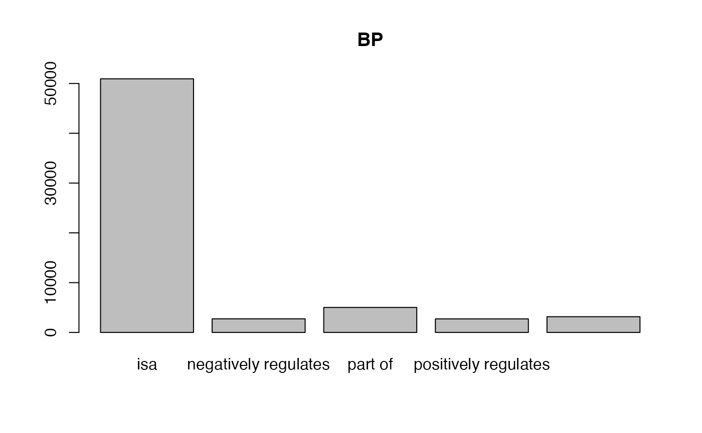
##
## isa part of
## 13736 11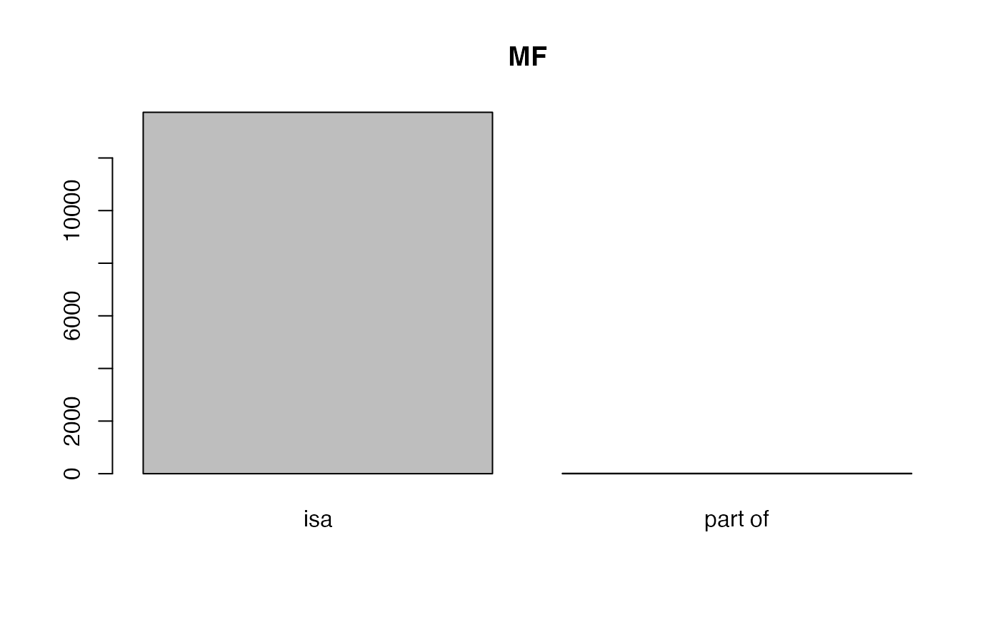
##
## isa part of
## 4676 1822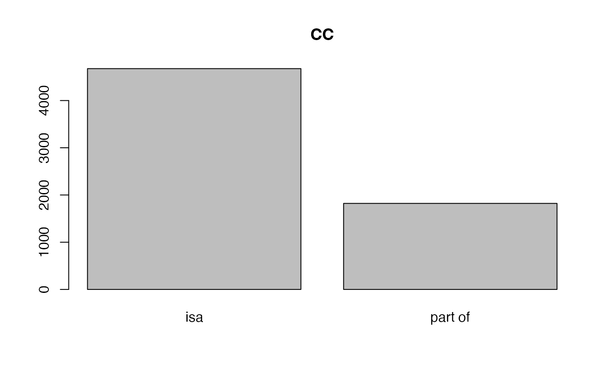
We can look at the distribution of the numbers of GO terms in each object.
- Number of child terms. The following plot shows it follows a power-law distribution (majority of GO terms have very few child terms).
lt = as.list(GOBPCHILDREN)
tb = table(sapply(lt, length))
x = as.numeric(names(tb))
y = as.vector(tb)
library(ggplot2)
ggplot(data.frame(x = x, y = y), aes(x = x, y = y)) +
geom_point() +
scale_x_continuous(trans='log10') +
scale_y_continuous(trans='log10') +
labs(x = "Number of child terms", y = "Number of GO terms") + ggtitle("GOBPCHILDREN")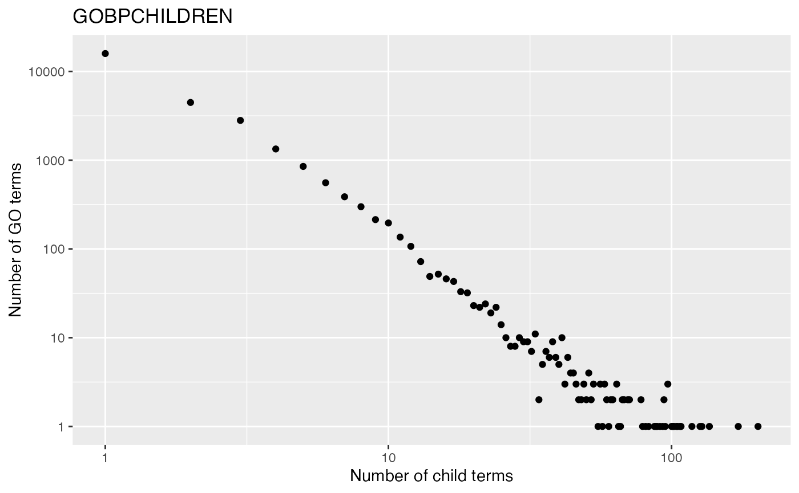
- Number of parent terms. The term “GO:0008150” (biological process) is removed from the analysis because it is the top node in BP namespace and it has no parent term.
lt = as.list(GOBPPARENTS)
lt = lt[names(lt) != "GO:0008150"]
tb = table(sapply(lt, length))
x = as.numeric(names(tb))
y = as.vector(tb)
ggplot(data.frame(x = x, y = y), aes(x = x, y = y)) +
geom_point() +
scale_y_continuous(trans='log10') +
labs(x = "Number of parent terms", y = "Number of GO terms") + ggtitle("GOBOPARENTS")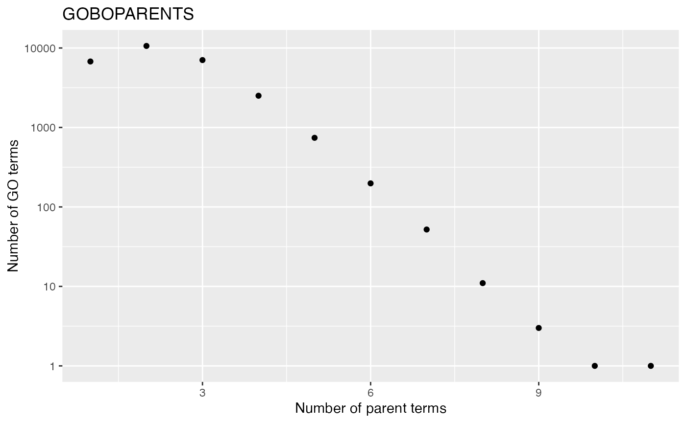
GOBPCHILDREN and GOBPPARENTS contain “local/direct” relations between GO terms, GOBPOFFSPRING and GOBPANCESTOR contain “local + distal” relations between GO terms.
lt = as.list(GOBPOFFSPRING)
lt[1:2]## $`GO:0000001`
## [1] NA
##
## $`GO:0000002`
## [1] "GO:0006264" "GO:0032042" "GO:0032043" "GO:0043504" "GO:0090296"
## [6] "GO:0090297" "GO:0090298" "GO:0110166" "GO:0140909" "GO:1901858"
## [11] "GO:1901859" "GO:1901860" "GO:1905951"## go_id go_id
## 1 GO:0006264 GO:0000002
## 2 GO:0032042 GO:0000002
## 3 GO:0032043 GO:0000002
## 4 GO:0043504 GO:0000002
## 5 GO:0090296 GO:0000002
## 6 GO:0090297 GO:0000002We can compare child terms and all offspring terms of “GO:0000002”:
GOBPCHILDREN[["GO:0000002"]]## part of
## "GO:0032042"
GOBPOFFSPRING[["GO:0000002"]]## [1] "GO:0006264" "GO:0032042" "GO:0032043" "GO:0043504" "GO:0090296"
## [6] "GO:0090297" "GO:0090298" "GO:0110166" "GO:0140909" "GO:1901858"
## [11] "GO:1901859" "GO:1901860" "GO:1905951"Constructing GOBPOFFSPRING from GOBPCHILDREN needs a recursive processing and it takes time:
lt_children = as.list(GOBPCHILDREN)
add_children = function(term, env) {
children = lt_children[[term]]
if(identical(children, NA)) {
return(NULL)
}
env$offspring = c(env$offspring, children)
lapply(children, add_children, env)
}
i = 0
lt_offspring = lapply(lt_children, function(x) {
i <<- i + 1
cat(i, "/", length(lt_children), "\n")
if(identical(x, NA)) {
return(x)
} else {
env = new.env()
env$offspring = character(0)
for(y in x) {
add_children(y, env)
}
unique(env$offspring)
}
})Information of GO terms
Only we only see the GO IDs, the object GOTERM can be used to get the names and long descriptions of GO terms.
GOTERM## TERM map for GO (object of class "GOTermsAnnDbBimap")Similarly, you can use as.list() or toTable() to format this object:
There are the following three types of useful information for each GO Term:
- GO name
- GO description/definition
- GO ontology/namespace
Term(), Definition() and Ontology() can be directly applied to GOTERM:
## GO:0000001
## "mitochondrion inheritance"
## GO:0000002
## "mitochondrial genome maintenance"
## GO:0000003
## "reproduction"
## GO:0000006
## "high-affinity zinc transmembrane transporter activity"
## GO:0000007
## "low-affinity zinc ion transmembrane transporter activity"
## GO:0000009
## "alpha-1,6-mannosyltransferase activity"
head(Definition(GOTERM))## GO:0000001
## "The distribution of mitochondria, including the mitochondrial genome, into daughter cells after mitosis or meiosis, mediated by interactions between mitochondria and the cytoskeleton."
## GO:0000002
## "The maintenance of the structure and integrity of the mitochondrial genome; includes replication and segregation of the mitochondrial chromosome."
## GO:0000003
## "The production of new individuals that contain some portion of genetic material inherited from one or more parent organisms."
## GO:0000006
## "Enables the transfer of zinc ions (Zn2+) from one side of a membrane to the other, probably powered by proton motive force. In high-affinity transport the transporter is able to bind the solute even if it is only present at very low concentrations."
## GO:0000007
## "Enables the transfer of a solute or solutes from one side of a membrane to the other according to the reaction: Zn2+ = Zn2+, probably powered by proton motive force. In low-affinity transport the transporter is able to bind the solute only if it is present at very high concentrations."
## GO:0000009
## "Catalysis of the transfer of a mannose residue to an oligosaccharide, forming an alpha-(1->6) linkage."## GO:0000001 GO:0000002 GO:0000003 GO:0000006 GO:0000007 GO:0000009
## "BP" "BP" "BP" "MF" "MF" "MF"Moreover, you can get subset the GOTERM object:
GOTERM[c("GO:0000001", "GO:0000002", "GO:0000003")]## TERM submap for GO (object of class "GOTermsAnnDbBimap")With Term(), Definition() and Ontology(), it is convinient to add additional information of GO terms:
## GO:0000001 GO:0000002
## "mitochondrion inheritance" "mitochondrial genome maintenance"
## GO:0000003
## "reproduction"
Definition(GOTERM[c("GO:0000001", "GO:0000002", "GO:0000003")])## GO:0000001
## "The distribution of mitochondria, including the mitochondrial genome, into daughter cells after mitosis or meiosis, mediated by interactions between mitochondria and the cytoskeleton."
## GO:0000002
## "The maintenance of the structure and integrity of the mitochondrial genome; includes replication and segregation of the mitochondrial chromosome."
## GO:0000003
## "The production of new individuals that contain some portion of genetic material inherited from one or more parent organisms."## GO:0000001 GO:0000002 GO:0000003
## "BP" "BP" "BP"Link GO terms to genes
GO.db only contains information for GO terms. GO also provides gene annotated to GO terms, by manual curation or computational prediction. Such annotations are represented as mappings between GO IDs and gene IDs from external databases, which are usually synchronized between major public databases such NCBI.
org.Hs.eg.db
To obtains genes in each GO term in R, Bioconductor provides a family of packages with name of org.*.db. Let’s take human for example, the corresponding package is org.Hs.eg.db. org.Hs.eg.db provides a standard way to provide mappings from Entrez gene IDs to a variaty of other databases.
library(org.Hs.eg.db)## Similarly, org.Hs.eg.db is a database object.
org.Hs.eg.db## OrgDb object:
## | DBSCHEMAVERSION: 2.1
## | Db type: OrgDb
## | Supporting package: AnnotationDbi
## | DBSCHEMA: HUMAN_DB
## | ORGANISM: Homo sapiens
## | SPECIES: Human
## | EGSOURCEDATE: 2023-Mar05
## | EGSOURCENAME: Entrez Gene
## | EGSOURCEURL: ftp://ftp.ncbi.nlm.nih.gov/gene/DATA
## | CENTRALID: EG
## | TAXID: 9606
## | GOSOURCENAME: Gene Ontology
## | GOSOURCEURL: http://current.geneontology.org/ontology/go-basic.obo
## | GOSOURCEDATE: 2023-01-01
## | GOEGSOURCEDATE: 2023-Mar05
## | GOEGSOURCENAME: Entrez Gene
## | GOEGSOURCEURL: ftp://ftp.ncbi.nlm.nih.gov/gene/DATA
## | KEGGSOURCENAME: KEGG GENOME
## | KEGGSOURCEURL: ftp://ftp.genome.jp/pub/kegg/genomes
## | KEGGSOURCEDATE: 2011-Mar15
## | GPSOURCENAME: UCSC Genome Bioinformatics (Homo sapiens)
## | GPSOURCEURL:
## | GPSOURCEDATE: 2023-Feb8
## | ENSOURCEDATE: 2023-Feb10
## | ENSOURCENAME: Ensembl
## | ENSOURCEURL: ftp://ftp.ensembl.org/pub/current_fasta
## | UPSOURCENAME: Uniprot
## | UPSOURCEURL: http://www.UniProt.org/
## | UPSOURCEDATE: Wed Mar 15 15:58:07 2023##
## Please see: help('select') for usage informationYou can use select() to obtain gene-GO term relations, but there are already objects calculated and easier to use. In this package, there are two objects for mapping between GO IDs and genes:
org.Hs.egGO2EGorg.Hs.egGO2ALLEGS
The difference between the two objects is org.Hs.egGO2EG contains genes that are directly annotated to every GO term, while org.Hs.egGO2ALLEGS contains genes that directly assigned to the GO term, as well as genes assigned to all its ancestor terms. For example if term A is a parent of term B where A is more general, genes with function B should also have function A. Thus org.Hs.egGO2ALLEGS is the proper object for GO gene sets.
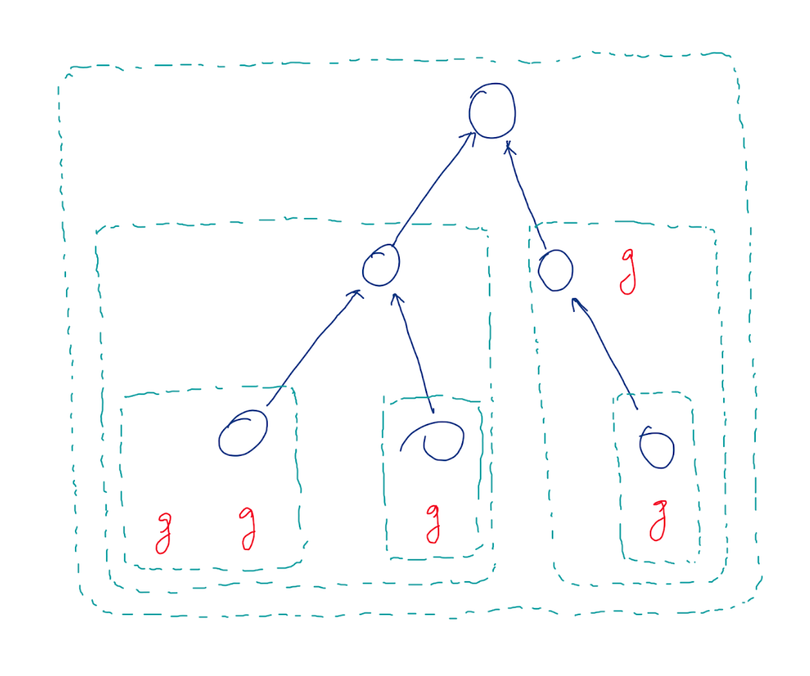
Again, org.Hs.egGO2ALLEGS is a database object. There are two ways to obtain gene annotations to GO terms.
lt = as.list(org.Hs.egGO2ALLEGS)
lt[3:4]## $`GO:0000012`
## IGI IDA IDA IDA NAS IDA
## "142" "1161" "2074" "3981" "7014" "7141"
## IEA IGI IMP IMP IBA IDA
## "7515" "7515" "7515" "23411" "54840" "54840"
## IMP IBA IDA IMP IMP IEA
## "54840" "55775" "55775" "55775" "200558" "100133315"
##
## $`GO:0000017`
## IDA IMP ISS IDA
## "6523" "6523" "6523" "6524"If we compare to org.Hs.egGO2EG which contains incomplete genes:
lt2 = as.list(org.Hs.egGO2EG)
lt2[3:4]## $`GO:0000012`
## IDA IDA IDA IDA IEA IMP
## "1161" "2074" "3981" "7141" "7515" "23411"
## IBA IDA IMP IBA IDA IMP
## "54840" "54840" "54840" "55775" "55775" "55775"
## IMP IEA
## "200558" "100133315"
##
## $`GO:0000017`
## IDA IMP ISS IDA
## "6523" "6523" "6523" "6524"The gene IDs have names. They are evidence of how genes are annotated to GO terms.
Let’s try toTable():
## gene_id go_id Evidence Ontology
## 1 1 GO:0008150 ND BP
## 2 2 GO:0000003 IEA BP
## 3 2 GO:0001553 IEA BP
## 4 2 GO:0001867 IDA BP
## 5 2 GO:0001868 IDA BP
## 6 2 GO:0001869 IDA BPNow there is an additional column "Ontology". This is convinient because org.Hs.egGO2ALLEGS contains GO terms from the three namespaces and the as.list() cannot distinguish the different namespaces.
Let’s calculate the frequency of evidence code:
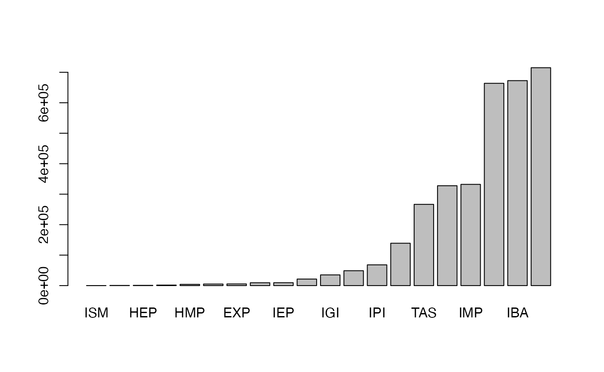
Now it seems we have obtained the complete gene-GO relations. Can we directly use org.Hs.egGO2ALLEGS as the GO gene sets? The answer is no, check the gene annotation for “GO:0000002”:
org.Hs.egGO2ALLEGS[["GO:0000002"]]## IMP TAS IDA IMP IMP IMP ISS IMP
## "142" "291" "1763" "1890" "2021" "3980" "4205" "4358"
## IMP IBA IDA IMP IMP IBA IDA IMP
## "4976" "5428" "5428" "5428" "6240" "6742" "6742" "7156"
## IEA IEA NAS IMP IEA IBA IC IDA
## "7157" "9093" "9361" "10000" "10891" "11232" "11232" "11232"
## IMP IBA IDA IBA IMP NAS IMP IEA
## "50484" "55186" "55186" "56652" "56652" "56652" "64863" "80119"
## IEA IBA IDA IBA IMP TAS IEA IBA
## "83667" "84275" "84275" "92667" "92667" "92667" "201163" "201973"
## IMP ISS IMP
## "201973" "201973" "219736"A gene can be duplicatedly annotated to a GO term with differnet evidence code. Thus, to obtain the GO gene sets, we need to take the unique genes.
n1 = sapply(lt, length)
lt = lapply(lt, unique)
n2 = sapply(lt, length)
plot(n1, n2, xlim = c(0, max(n1)), ylim = c(0, max(n1)),
xlab = "with duplicated", ylab = "without duplicated",
main = "number of genes in GO BP gene sets")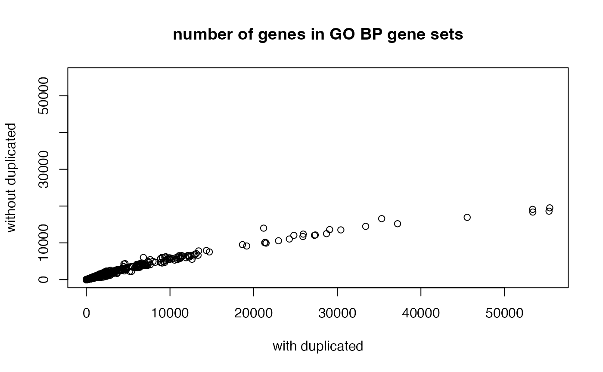
tb = tb[, 1:2]
tb = unique(tb)With tb, we can look at the distribution of numbers of genes in GO gene sets. It approximately follows a power-law distribution. This means majority of GO gene sets only contain intermediate numbers of genes.
tb = toTable(org.Hs.egGO2ALLEGS)
tb = unique(tb[tb$Ontology == "BP", 1:2])
t1 = table(table(tb$go_id))
x1 = as.numeric(names(t1))
y1 = as.vector(t1)
ggplot(data.frame(x = x1, y = y1), aes(x = x, y = y)) +
geom_point() +
scale_x_continuous(trans='log10') +
scale_y_continuous(trans='log10') +
labs(x = "Number of annotated genes", y = "Number of GO terms") + ggtitle("GOBP")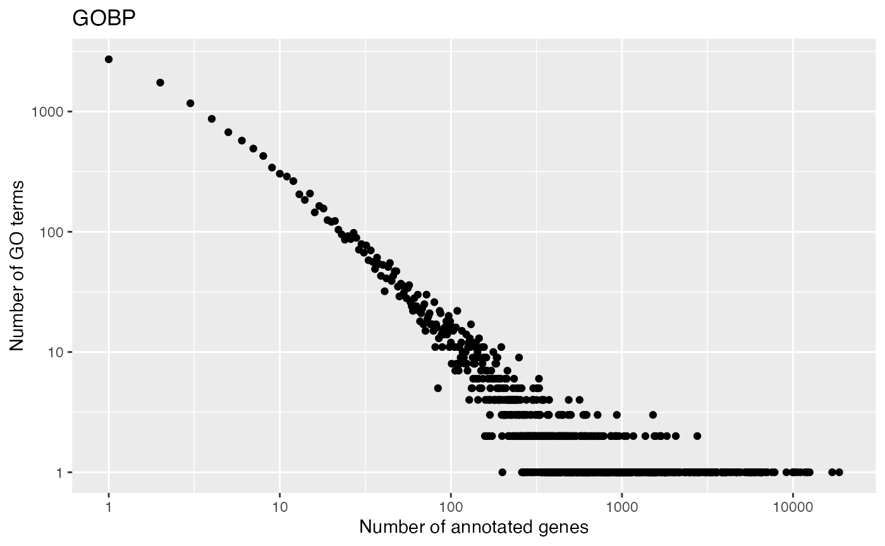
And the distribution of numbers of GO gene sets that a gene is annotated.
t2 = table(table(tb$gene_id))
x2 = as.numeric(names(t2))
y2 = as.vector(t2)
ggplot(data.frame(x = x2, y = y2), aes(x = x, y = y)) +
geom_point() +
scale_x_continuous(trans='log10') +
scale_y_continuous(trans='log10') +
labs(x = "Number of gene sets", y = "Number of genes") + ggtitle("GOBP")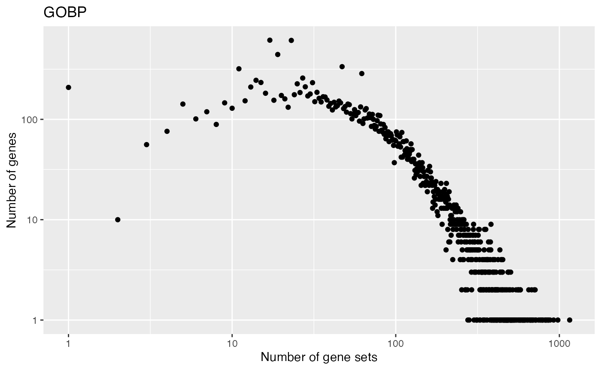
Biocondutor core team maintaines org.*.db for 18 organisms
| Package | Organism | Package | Organism |
|---|---|---|---|
org.Hs.eg.db |
Human | org.Ss.eg.db |
Pig |
org.Mm.eg.db |
Mouse | org.Gg.eg.db |
Chicken |
org.Rn.eg.db |
Rat | org.Mmu.eg.db |
Rhesus monkey |
org.Dm.eg.db |
Fruit fly | org.Cf.eg.db |
Canine |
org.At.tair.db |
Arabidopsis | org.EcK12.eg.db |
E coli strain K12 |
org.Sc.sgd.db |
Yeast | org.Xl.eg.db |
African clawed frog |
org.Dr.eg.db |
Zebrafish | org.Ag.eg.db |
Malaria mosquito |
org.Ce.eg.db |
Nematode | org.Pt.eg.db |
Chimpanzee |
org.Bt.eg.db |
Bovine | org.EcSakai.eg.db |
E coli strain Sakai |
Use the select() interface
This is normally a two-step process:
- get all genes
- get all GO terms
all_genes = keys(org.Hs.eg.db, keytype = "ENTREZID")
tb = select(org.Hs.eg.db, keys = all_genes, keytype = "ENTREZID",
columns = c("GOALL", "ONTOLOGYALL"))## 'select()' returned 1:many mapping between keys and columns
head(tb)## ENTREZID GOALL EVIDENCEALL ONTOLOGYALL
## 1 1 GO:0003674 ND MF
## 2 1 GO:0005575 HDA CC
## 3 1 GO:0005575 IBA CC
## 4 1 GO:0005575 IDA CC
## 5 1 GO:0005575 TAS CC
## 6 1 GO:0005576 HDA CCThen you might need to take the unique genes:
## ENTREZID GOALL
## 13 1 GO:0008150
## 52 2 GO:0000003
## 53 2 GO:0001553
## 54 2 GO:0001867
## 55 2 GO:0001868
## 56 2 GO:0001869Practice
Practice 2
org.Hs.egGO2ALLEGS has already merged genes annotated to all offspring terms. Try to manually construct GO gene sets with GOBPOFFSPRING and org.Hs.egGO2EGS, then compare to gene sets in org.Hs.egGO2ALLEGS.
Solution
For a GO term, we need to consider its offspring terms + the term itself:
Merge annotated genes for all offspring terms:
Compare to org.Hs.egGO2ALLEGS:
lt_genes_all = as.list(org.Hs.egGO2ALLEGS)
lt_genes_all = lapply(lt_genes_all, unique)
cn = intersect(names(lt_genes_manual), names(lt_genes_all))
plot(sapply(lt_genes_manual[cn], length), sapply(lt_genes_all[cn], length), log = "xy",
xlab = "manual gene sets", ylab = "org.Hs.egGO2ALLEGS")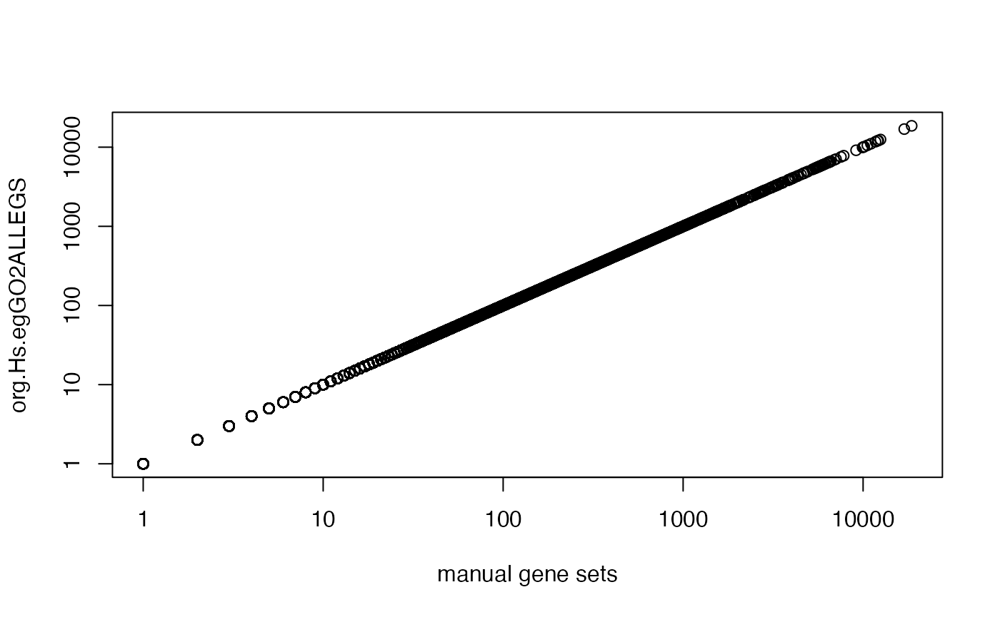